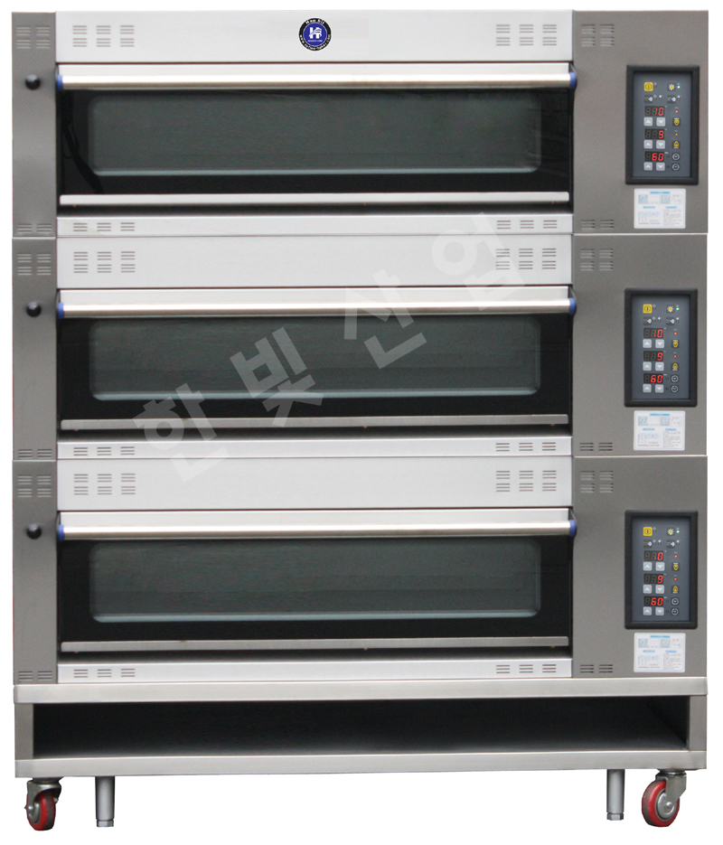
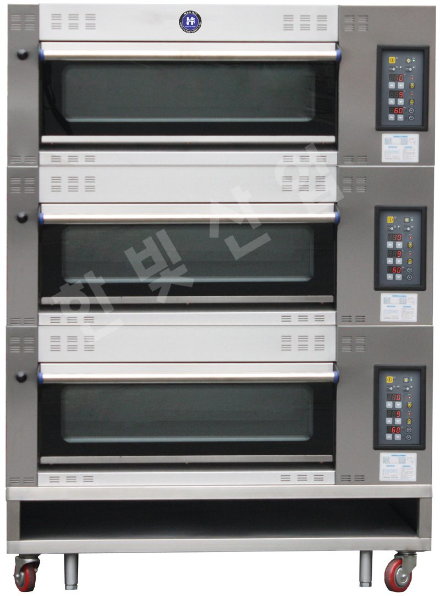
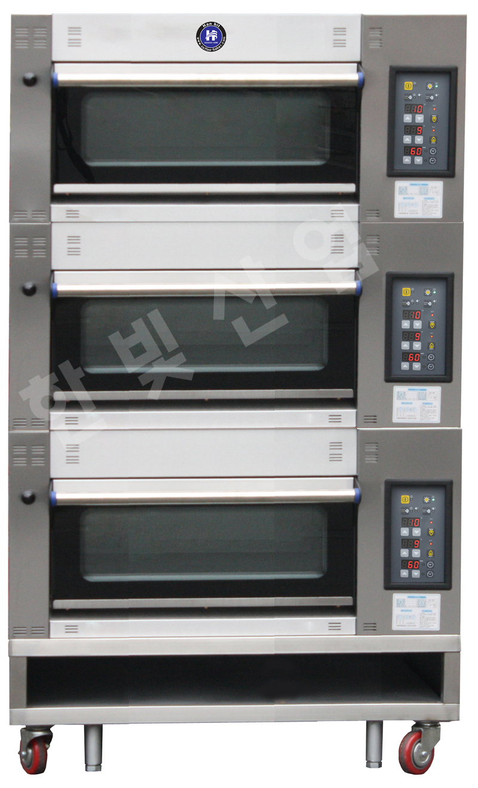
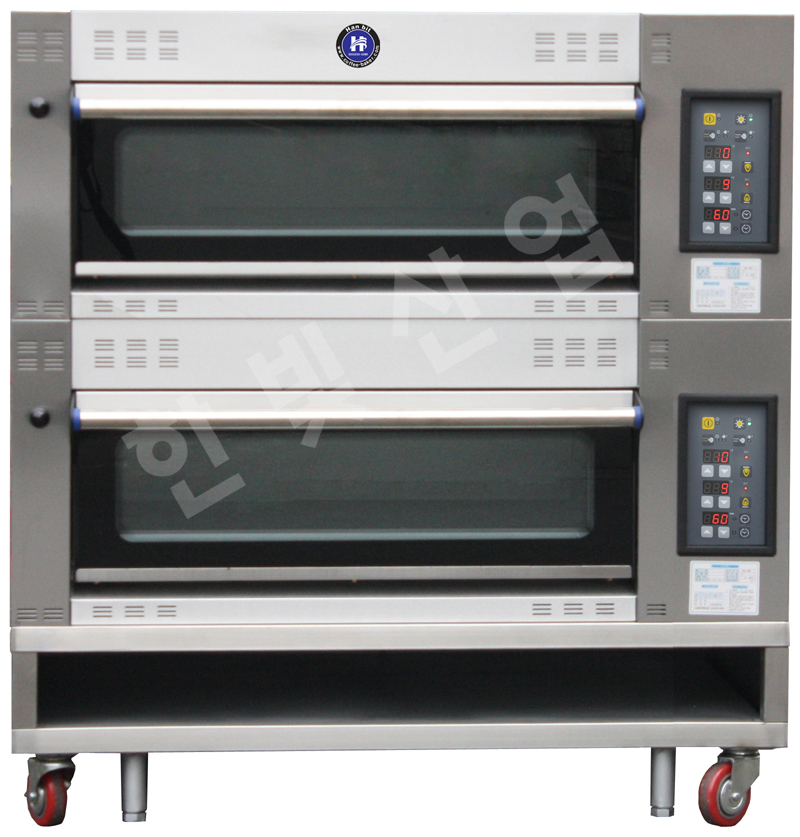
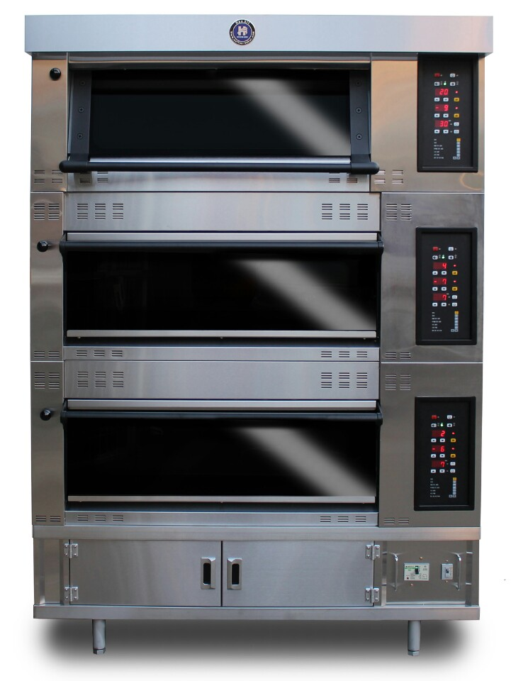
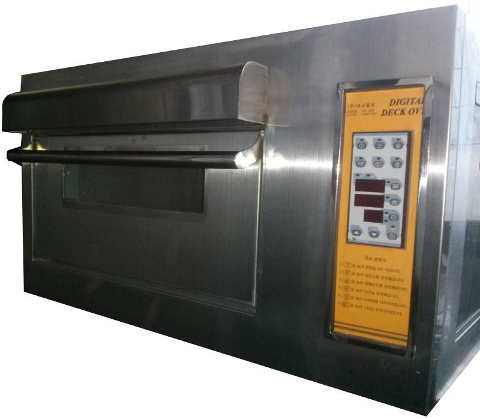
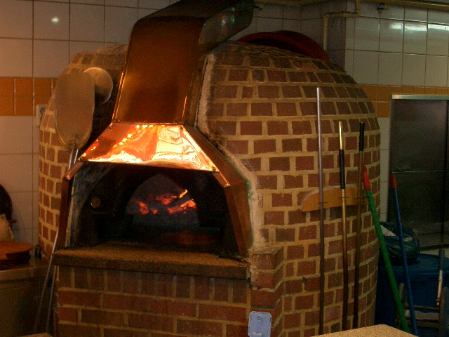
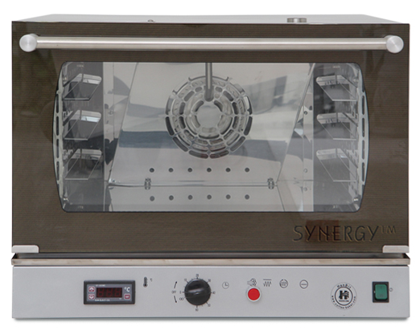

SYNERGY PRO · 3 DECK
SP33
2009년 보관 기술자료
3매입 3단의 제과·제빵용 데크오븐. 스팀보일러 및 각 단별 상·하부 열 제어 등이 당시 자료에 소개돼 있습니다.
빵판 구성3매입 × 3단 = 9매
전원380 V, 3상+N
규격·소비전력원문 값 상충, 확인 필요
한빛산업 보관 2009~2014년 기술자료와 제품 사진을 기준으로 정리한 오븐 포트폴리오입니다. 현재 생산·판매 여부와 최종 사양은 상담 시 확인합니다.
사진이 보관된 장비는 모델별로 연결했습니다. 이전 기술자료이므로 판매 중인 제품처럼 확정 표시하지 않고 모델 이력과 상담 정보를 구분합니다.

2009년 보관 기술자료
3매입 3단의 제과·제빵용 데크오븐. 스팀보일러 및 각 단별 상·하부 열 제어 등이 당시 자료에 소개돼 있습니다.

2009년 보관 기술자료
2매입 3단 제과·제빵·피자용 데크오븐. 원문에는 상하 열 제어와 옵션 대리석 및 스팀보일러가 소개돼 있습니다.

2009년 보관 기술자료
1매입 3단 구성으로 소개된 시너지프로 데크오븐입니다.

2009년 보관 기술자료
2매입 2단의 소형 시너지프로 오븐. 운영 전력은 원본 문서와 현장 전기 용량을 반드시 대조해야 합니다.

2014년 보관 기술자료
자연발효빵과 일반 제과·제빵용 구획을 함께 고려한 마그마 데크오븐입니다. 원본의 건강·의학적 효능 주장은 근거 확인 전 제외했습니다.

2014년 보관 기술자료 · 원본 사양 이미지
카페·아카데미 등 소규모 제과 제빵 용도. 원본은 1매입 1단, 220V 사용을 안내합니다. 전력 수치 표기는 원문에 상충하는 부분이 있어 공급 전 확인해야 합니다.

원본 사진 · 세부 제원 확인 필요
오븐 폴더에 보관된 설치·제품 사진입니다. 별도 규격·출력·모델명 문서는 확인되지 않아 사진 중심으로 소개합니다.

원본 이미지 · 모델명 확인 필요
오븐 폴더에 보관된 별도 디지털 조리기기 이미지입니다. 현행 제품의 모델명과 상세 사양을 확인한 뒤 제품별로 안내합니다.
시너지프로 제품 원문에서는 각 단 독립 제어, 열판과 스팀 방식, 제과제빵용 작업환경을 주요 기술 요소로 소개합니다.

자료 근거: 구글드라이브 ‘오븐’ 폴더의 SP13·SP23·SP33·SP+22·마그마오븐 제품별 텍스트 및 원본 사진. 일부 2009년 원본은 전력·외형 수치가 서로 다르거나 단위가 부정확해 수치 표기를 보류했습니다. 마그마 제품의 원본 건강효과 광고문구는 과학적 확인 전 게시하지 않습니다.
← 제품 카탈로그로 돌아가기